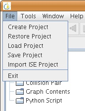
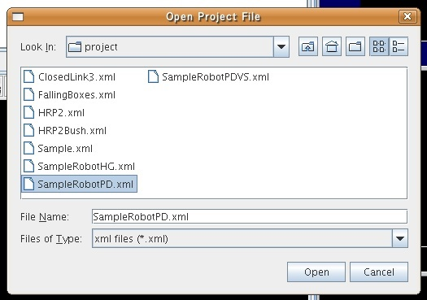
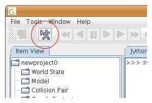

Launching GrxUILaunch GrxUI (GUI of OpenHRP3) using the startup script. To locate startup script, go to the directory where you extracted OpenHRP3, and then browse;
On Windows, you can easily start GrxUI, by double-clicking the above file browsed through Explorer. Or if you used our Binary installation package(msi) to install OpenHRP3, you can find a shortcut to "GrxUI.bat" in "Start" -> "All Programs" -> "OpenHRP3" menu. On Linux also, you can start GrxUI by simply double-clicking the start script file browsed through File Browser as same as Windows, or by typing the following command in terminal. cd OpenHRP3 directory cd bin/unix ./GrxUI.sh Running simulationOpening a ProjectYou can open a project by "File" -> "Load Project".
 A dialog box as shown below, will be opened. Select any project file and then press "Open" button.(Due to version upgrades, the view of the standard collection of project files could be different from the figure below.)
 SimulationNow start the simulation by using "start simulation" button.
 Does the simulation model in the left-lower corner of GrxUI window, start animating? In our latest version, we have prepared some other simulation samples. Please try the following model too. If the each of the following model animates as it was expected, and then the simulation completes wihtout showing error messeges, the installation of OpenHRP3 is succeeded.
|